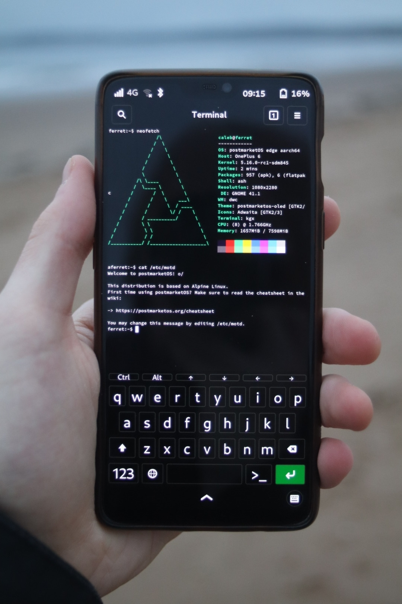

OnePlus 6 (oneplus-enchilada)
|
 Running Phosh | |
| Manufacturer | OnePlus |
|---|---|
| Name | 6 |
| Codename | oneplus-enchilada |
| Released | 2018 |
| Category | community |
| Original software | Android 8.0 (Up to Android 11) on Linux 4.9 |
| postmarketOS kernel | Mainline |
| Hardware | |
| Chipset | Qualcomm SDM845 Snapdragon 845 |
| CPU | Octa-core (4x 2.8 GHz Kryo 385 Gold & 4x 1.7 GHz Kryo 385 Silver) |
| GPU | Adreno 630 |
| Display | 1080 x 2280 AMOLED |
| Storage | 64/128/256 GB |
| Memory | 6/8 GB |
| Architecture | aarch64 |
| Unixbench Whet/Dhry score | 6029.9 |
{kind=link}
| USB Networking |
Works
|
|---|---|
| Flashing |
Works
|
| Touchscreen |
Works
|
| Display |
Works
|
| WiFi |
Works
|
| FDE |
Works
|
| Mainline |
Works
|
| Battery |
Partial
|
| 3D Acceleration |
Works
|
| Audio |
Partial
|
| Bluetooth |
Works
|
| Camera |
Broken
|
| GPS |
Broken
|
| Mobile data |
Works
|
| SMS |
Works
|
| Calls |
Broken
|
| USB OTG |
Partial
|
| NFC | |
| Accelerometer |
Broken
|
|---|---|
| Magnetometer | |
| Ambient Light | |
| Proximity | |
| Hall Effect | |
| Ir TX | |
|---|---|
| TrustZone |
Broken
|
This page documents the status of mainline Linux on the OnePlus 6!
The OnePlus 6 is an incredibly powerful and efficient mobile device, well regarded and (bar the notch) an excellent portable work horse, getting mainline Linux working means not only freedom from proprietary software, and security updates at OnePlus' discretion, but also the ability to boot any mobile or desktop distro as long as the required software is packaged.
The phone is currently capable of booting modern Linux with only a few patches, check the table on the right (or above on mobile) for the hardware support checklist.
Contents
How to enter flash mode
Unplug from USB, hold Power and Volume Up until you see "Fastboot Mode" text.
For the OnePlus 6T, hold Power and both Volume Up and Volume Down to get in Fastboot Mode.
Installing
| For dual booting with Android, see "Dual booting" below. |
Prerequisites
Upgrade
| The bootloader is the only firmware that postmarketOS doesn't install itself, all other firmware (devicetree, gpu, modem etc) is supplied by postmarketOS |
Before installing postmarketOS, it's recommended that you upgrade your device to the latest release of OOS, whilst this is not a hard requirement, there have been issues with fastboot misbehaving on older firmware versions.
There is no hard requirement that your device is running a specific Android version, as unlike other (Halium based) distributions, postmarketOS doesn't depend on re-using hardware support provided by proprietary userspace blobs.
Fastboot
Install fastboot on your host, refer to Google for instructions.
Unlock the bootloader
Before installing postmarketOS you have to unlock your bootloader, for the T-mobile version of the device in the US, refer to Google for guides on obtaining an unlock code. If your device is not carrier locked, the following is all that's needed to unlock the bootloader:
1. Open setting, go to "About" and tap on the "build number" box ~10 times until you get a message saying you are now a developer.
2. Go back to the main settings page, go to system and then developer options (it might be hiding behind a drop down). Toggle the switch to "enable OEM unlocking"
3. Refer to "how to enter flash mode" above to get into fastboot mode, then re-attach your USB cable. Run the following command on your host:
fastboot oem unlock
4. Read the message displayed on your device screen, once you're happy confirm the unlock. THIS WILL ERASE YOUR DEVICE.
All done! You can now continue with this guide.
Prebuilt images
Choose an image for your device from the download page.
Download the files ending in .img, you may also want to download the hashes for verification. On Windows you can use a tool like 7zip to decompress the files, on Linux use unxz. Then use fastboot to flash with the following:
fastboot erase dtbo fastboot flash boot <date>-<time>-postmarketOS-edge-phosh-6-oneplus-[enchilada|fajita]-boot.img fastboot flash userdata <date>-<time>-postmarketOS-edge-phosh-6-oneplus-[enchilada|fajita].img
For prebuilt images, the default username is user and the default password is 147147. It isn't possible to set up full disk encryption with prebuilt images yet.
Manual build
The vendor is OnePlus, the codename is "enchilada" for the OnePlus 6 and "fajita" for the OnePlus 6T.
Follow the general installation guide, return here when told to (at the "installation and flashing section").
Now run the following, pick a password when prompted.
pmbootstrap install
Reboot back into flash mode (explained above) after each of the following commands (if you encounter weird behaviour like the command getting stuck before the flashing starts).
By default the rootfs will be flashed to system, this doesn't leave much free space for your applications / data, if you don't mind factory resetting the device you can instead flash to userdata by specifying the partition like below.
fastboot erase dtbo pmbootstrap flasher flash_rootfs --partition userdata pmbootstrap flasher flash_kernel
Reboot and you're good to go!
If you have flashing or booting issues, try first flashing the latest OxygenOS to the slot you want to install postmarketOS to (ie, flash in TWRP from your other slot). If you still have no luck, try flashing OOS 9 as the bootloader can be more forgiving.
Dual booting
Flashing to system
It is possible to dual boot with Android when flashing postmarketOS to the system partition, although this severely limits the space available.
In fastboot mode run fastboot getvar current-slot to get the currently active slot (where Android is installed). For this example we'll use a as the slot with Android, if your current slot is b then simply switch "a" with "b" and vice versa. To install postmarketOS to the inactive slot, run
fastboot set_active b
before following the flashing steps above, as well as replacing userdata in the flashing commands with system so as to preserve your Android userdata partition.
You can now switch back to Android by entering fastboot mode and running
fastboot set_active a
Note: Substituting system for vendor is also fine. This setup also allows for a recovery pmOS install, since all partitions are accessible on any booted OS, so long as there is root access.
Sharing userdata with Android
It's possible to share the userdata partition with Android, using it as the postmarketOS rootfs as well as the Android data partition at the same time. This may come with unintended side effects but initial testing shows that it works well enough.
The postmarketOS rootfs image is not actually an ext4 image, it's actually a full disk image containing two partitions, Android obviously doesn't know how to handle this so we have to split it up. You can do this manually with a prebuilt but that is left as an exercise to the reader...
This method will erase your userdata partition, it is also non-trivial to "uninstall" postmarketOS.
Before continuing, flash your Android ROM of choice and ensure that it boots. Don't go through setup as these steps will erase userdata.
Run through pmbootstrap init like explained above, but instead of running pmbootstrap install run
pmbootstrap install --split # And then pmbootstrap export
You can now manually flash the boot and root partitions, note that the "boot" partition here isn't the Android boot partition, it's the postmarketOS boot partition which is used to keep the kernel, initramfs etc. We can place the boot image on vendor on the slot with postmarketOS. Make sure not to run this on your Android slot.
fastboot flash userdata /tmp/postmarketOS-export/oneplus-[enchilada|fajita]-root.img fastboot flash vendor /tmp/postmarketOS-export/oneplus-[enchilada|fajita]-boot.img
The postmarketOS initramfs will automatically detect these during boot. You can now flash the boot partition, erase dtbo and boot postmarketOS as usual! You must boot postmarketOS so that it can resize the userdata partition before you boot Android. Once pmos first boot is done you can reboot and use fastboot to switch slots.
If pmOS does not resize the partition properly, run the following on pmOS
sudo resize2fs /dev/sda17
Advanced Partitioning
Warning! |
This is a dangerous process that may hard-brick your phone, requiring the use of poorly documented EDL-mode recovery tools to fix |
More information on partitioning userdata available at OnePlus 6 (oneplus-enchilada)/Custom Partitioning.
Fastboot bugs
If you encounter "weird" errors from fastboot, such as "device does not support slots":
Once the device is in fastboot mode unplug it, run your fastboot / flasher command and wait for the "<waiting for device>" message, now choose "reboot bootloader" on the device and press the power button to select, plug in the device while it reboots.
Upgrading
Upgrading can be done through Alpines package manager "apk", to upgrade everything simply open a terminal and run sudo apk upgrade -a. This includes kernel upgrades.
Device won't boot properly after upgrade
On postmarketOS edge at least, there have been some issues with the kernel upgrade script, it's possible that the kernel will upgrade but the new one won't be flashed, this leads to having an old kernel but with new kernel modules. This will result in one of the following: Your device gets stuck on the postmarketOS logo, your device gets stuck on a blinking cursor, your device boots properly but wifi, bluetooth, battery and haptics are all broken.
If you're able to get a shell on your device (either with ssh or locally) you can simply run the following:
sudo pmos-update-kernel postmarketos-qcom-sdm845
Alternative, you can fix this by manually flashing the upgraded kernel as follows, you will need fastboot installed on your host.
| These steps won't work if you are dual booting by sharing userdata, the postmarketOS boot partition won't be handled by Jumpdrive |
1. Download JumpDrive for the OnePlus 6 from here (pick your model): https://github.com/dreemurrs-embedded/Jumpdrive/releases
2. Run fastboot boot boot-oneplus-[enchilada|fajita].img and wait until you see the graphics on screen.
3. Open your file explorer, you should see two new drives called pmOS_boot and pmOS_root, open pmOS_boot.
4. Copy the file boot.img-postmarketos-qcom-sdm845 to your computer.
5. Eject the drives and reboot your device into fastboot again using the button combination (see "How to enter flash mode" above).
6. Run fastboot flash boot /path/to/the/boot.img/you/copied
7. Reboot your device with fastboot reboot
You should now boot into postmarketOS with everything working again!
Building
Feel like helping? Want to learn kernel development?
Check out the mainlining guide SDM845 Mainlining for detailed SDM845 specific instructions on initial device porting and building.
Feel free to contact @caleb (or anyone) in the #postmarketos-mainline matrix channel if you're stuck.
Info
Hacking
See Hacking for details.
Partition map
oneplus-enchilada:~$ ls -lah /dev/disk/by-partlabel/
total 0 drwxr-xr-x 2 root root 2.0K Jan 7 1970 . drwxr-xr-x 8 root root 160 Jan 7 1970 .. lrwxrwxrwx 1 root root 10 Jan 7 1970 ALIGN_TO_128K_1 -> ../../sdd1 lrwxrwxrwx 1 root root 10 Jan 7 1970 ALIGN_TO_128K_2 -> ../../sdf1 lrwxrwxrwx 1 root root 11 Jan 7 1970 ImageFv -> ../../sde72 lrwxrwxrwx 1 root root 11 Jan 7 1970 LOGO_a -> ../../sde20 lrwxrwxrwx 1 root root 11 Jan 7 1970 LOGO_b -> ../../sde48 lrwxrwxrwx 1 root root 10 Jan 7 1970 abl_a -> ../../sde8 lrwxrwxrwx 1 root root 11 Jan 7 1970 abl_b -> ../../sde36 lrwxrwxrwx 1 root root 10 Jan 7 1970 aop_a -> ../../sde1 lrwxrwxrwx 1 root root 11 Jan 7 1970 aop_b -> ../../sde29 lrwxrwxrwx 1 root root 11 Jan 7 1970 apdp -> ../../sde63 lrwxrwxrwx 1 root root 10 Jan 7 1970 bluetooth_a -> ../../sde5 lrwxrwxrwx 1 root root 11 Jan 7 1970 bluetooth_b -> ../../sde33 lrwxrwxrwx 1 root root 11 Jan 7 1970 boot_a -> ../../sde11 lrwxrwxrwx 1 root root 11 Jan 7 1970 boot_aging -> ../../sde58 lrwxrwxrwx 1 root root 11 Jan 7 1970 boot_b -> ../../sde39 lrwxrwxrwx 1 root root 10 Jan 7 1970 cdt -> ../../sdd2 lrwxrwxrwx 1 root root 11 Jan 7 1970 cmnlib64_a -> ../../sde13 lrwxrwxrwx 1 root root 11 Jan 7 1970 cmnlib64_b -> ../../sde41 lrwxrwxrwx 1 root root 11 Jan 7 1970 cmnlib_a -> ../../sde12 lrwxrwxrwx 1 root root 11 Jan 7 1970 cmnlib_b -> ../../sde40 lrwxrwxrwx 1 root root 11 Jan 7 1970 config -> ../../sda12 lrwxrwxrwx 1 root root 10 Jan 7 1970 ddr -> ../../sdd3 lrwxrwxrwx 1 root root 11 Jan 7 1970 devcfg_a -> ../../sde14 lrwxrwxrwx 1 root root 11 Jan 7 1970 devcfg_b -> ../../sde42 lrwxrwxrwx 1 root root 11 Jan 7 1970 devinfo -> ../../sde61 lrwxrwxrwx 1 root root 11 Jan 7 1970 dip -> ../../sde62 lrwxrwxrwx 1 root root 10 Jan 7 1970 dsp_a -> ../../sde9 lrwxrwxrwx 1 root root 11 Jan 7 1970 dsp_b -> ../../sde37 lrwxrwxrwx 1 root root 11 Jan 7 1970 dtbo_a -> ../../sde18 lrwxrwxrwx 1 root root 11 Jan 7 1970 dtbo_b -> ../../sde46 lrwxrwxrwx 1 root root 10 Jan 7 1970 frp -> ../../sda6 lrwxrwxrwx 1 root root 10 Jan 7 1970 fsc -> ../../sdf5 lrwxrwxrwx 1 root root 10 Jan 7 1970 fsg -> ../../sdf4 lrwxrwxrwx 1 root root 11 Jan 7 1970 fw_4j1ed_a -> ../../sde21 lrwxrwxrwx 1 root root 11 Jan 7 1970 fw_4j1ed_b -> ../../sde49 lrwxrwxrwx 1 root root 11 Jan 7 1970 fw_4u1ea_a -> ../../sde22 lrwxrwxrwx 1 root root 11 Jan 7 1970 fw_4u1ea_b -> ../../sde50 lrwxrwxrwx 1 root root 11 Jan 7 1970 fw_ufs3_a -> ../../sde23 lrwxrwxrwx 1 root root 11 Jan 7 1970 fw_ufs3_b -> ../../sde51 lrwxrwxrwx 1 root root 11 Jan 7 1970 fw_ufs4_a -> ../../sde24 lrwxrwxrwx 1 root root 11 Jan 7 1970 fw_ufs4_b -> ../../sde52 lrwxrwxrwx 1 root root 11 Jan 7 1970 fw_ufs5_a -> ../../sde25 lrwxrwxrwx 1 root root 11 Jan 7 1970 fw_ufs5_b -> ../../sde53 lrwxrwxrwx 1 root root 11 Jan 7 1970 fw_ufs6_a -> ../../sde26 lrwxrwxrwx 1 root root 11 Jan 7 1970 fw_ufs6_b -> ../../sde54 lrwxrwxrwx 1 root root 11 Jan 7 1970 fw_ufs7_a -> ../../sde27 lrwxrwxrwx 1 root root 11 Jan 7 1970 fw_ufs7_b -> ../../sde55 lrwxrwxrwx 1 root root 11 Jan 7 1970 fw_ufs8_a -> ../../sde28 lrwxrwxrwx 1 root root 11 Jan 7 1970 fw_ufs8_b -> ../../sde56 lrwxrwxrwx 1 root root 10 Jan 7 1970 hyp_a -> ../../sde3 lrwxrwxrwx 1 root root 11 Jan 7 1970 hyp_b -> ../../sde31 lrwxrwxrwx 1 root root 11 Jan 7 1970 keymaster_a -> ../../sde10 lrwxrwxrwx 1 root root 11 Jan 7 1970 keymaster_b -> ../../sde38 lrwxrwxrwx 1 root root 10 Jan 7 1970 keystore -> ../../sda5 lrwxrwxrwx 1 root root 11 Jan 7 1970 limits -> ../../sde67 lrwxrwxrwx 1 root root 11 Jan 7 1970 logdump -> ../../sde71 lrwxrwxrwx 1 root root 11 Jan 7 1970 logfs -> ../../sde69 lrwxrwxrwx 1 root root 10 Jan 7 1970 mdtp_a -> ../../sde7 lrwxrwxrwx 1 root root 11 Jan 7 1970 mdtp_b -> ../../sde35 lrwxrwxrwx 1 root root 10 Jan 7 1970 mdtpsecapp_a -> ../../sde6 lrwxrwxrwx 1 root root 11 Jan 7 1970 mdtpsecapp_b -> ../../sde34 lrwxrwxrwx 1 root root 11 Jan 7 1970 minidump -> ../../sde57 lrwxrwxrwx 1 root root 10 Jan 7 1970 misc -> ../../sda3 lrwxrwxrwx 1 root root 10 Jan 7 1970 modem_a -> ../../sde4 lrwxrwxrwx 1 root root 11 Jan 7 1970 modem_b -> ../../sde32 lrwxrwxrwx 1 root root 10 Jan 7 1970 modemst1 -> ../../sdf2 lrwxrwxrwx 1 root root 10 Jan 7 1970 modemst2 -> ../../sdf3 lrwxrwxrwx 1 root root 11 Jan 7 1970 msadp -> ../../sde64 lrwxrwxrwx 1 root root 11 Jan 7 1970 odm_a -> ../../sda15 lrwxrwxrwx 1 root root 11 Jan 7 1970 odm_b -> ../../sda16 lrwxrwxrwx 1 root root 10 Jan 7 1970 oem_dycnvbk -> ../../sda8 lrwxrwxrwx 1 root root 10 Jan 7 1970 oem_stanvbk -> ../../sda9 lrwxrwxrwx 1 root root 11 Jan 7 1970 op1 -> ../../sde59 lrwxrwxrwx 1 root root 10 Jan 7 1970 op2 -> ../../sda7 lrwxrwxrwx 1 root root 10 Jan 7 1970 param -> ../../sda4 lrwxrwxrwx 1 root root 10 Jan 7 1970 persist -> ../../sda2 lrwxrwxrwx 1 root root 11 Jan 7 1970 qupfw_a -> ../../sde15 lrwxrwxrwx 1 root root 11 Jan 7 1970 qupfw_b -> ../../sde43 lrwxrwxrwx 1 root root 11 Jan 7 1970 reserve1 -> ../../sda10 lrwxrwxrwx 1 root root 11 Jan 7 1970 reserve2 -> ../../sda11 lrwxrwxrwx 1 root root 11 Jan 7 1970 sec -> ../../sde60 lrwxrwxrwx 1 root root 11 Jan 7 1970 splash -> ../../sde66 lrwxrwxrwx 1 root root 11 Jan 7 1970 spunvm -> ../../sde65 lrwxrwxrwx 1 root root 10 Jan 7 1970 ssd -> ../../sda1 lrwxrwxrwx 1 root root 11 Jan 7 1970 sti -> ../../sde70 lrwxrwxrwx 1 root root 11 Jan 7 1970 storsec_a -> ../../sde19 lrwxrwxrwx 1 root root 11 Jan 7 1970 storsec_b -> ../../sde47 lrwxrwxrwx 1 root root 11 Jan 7 1970 system_a -> ../../sda13 lrwxrwxrwx 1 root root 11 Jan 7 1970 system_b -> ../../sda14 lrwxrwxrwx 1 root root 11 Jan 7 1970 toolsfv -> ../../sde68 lrwxrwxrwx 1 root root 10 Jan 7 1970 tz_a -> ../../sde2 lrwxrwxrwx 1 root root 11 Jan 7 1970 tz_b -> ../../sde30 lrwxrwxrwx 1 root root 11 Jan 7 1970 userdata -> ../../sda17 lrwxrwxrwx 1 root root 11 Jan 7 1970 vbmeta_a -> ../../sde17 lrwxrwxrwx 1 root root 11 Jan 7 1970 vbmeta_b -> ../../sde45 lrwxrwxrwx 1 root root 11 Jan 7 1970 vendor_a -> ../../sde16 lrwxrwxrwx 1 root root 11 Jan 7 1970 vendor_b -> ../../sde44 lrwxrwxrwx 1 root root 10 Jan 7 1970 xbl_a -> ../../sdb1 lrwxrwxrwx 1 root root 10 Jan 7 1970 xbl_b -> ../../sdc1 lrwxrwxrwx 1 root root 10 Jan 7 1970 xbl_config_a -> ../../sdb2 lrwxrwxrwx 1 root root 10 Jan 7 1970 xbl_config_b -> ../../sdc2
The big list of issues
In no particular order...
Stuck in fastboot after rebooting
This happens because of Android/qcom A/B slot switching, fix it with the following:
Get the current slot
fastboot getvar current-slot
Switch to the inactive slot and back again to reset to slot retry count:
# Assuming the current slot is "a" fastboot set_active b set_active a # If the current slot is b fastboot set_active a set_active b
In short, when you do an upgrade in Android, it installs to the other slot, and then switches to that slot, to handle the case where the upgrade is bad and doesn't boot anymore A/B implements a kind of dead mans switch, after booting Android is meant to set a flag to "mark boot successful", if that flag isn't set then it's meant to boot into recovery instead, after ~7 reboots the bootloader gives up and refuses to boot, leaving you in fastboot. Because postmarketOS doesn't implement a "recovery" it just boots normally.
So after ~7 boots you'll end up in this state and have to run the above.
The research done in https://gitlab.com/sdm845-mainline/qbootctl and https://gitlab.com/sdm845-mainline/abootctl will eventually resolve this by implementing the bootctrl features in mainline.
Charging
Charging is for some reason extremely slow on the OnePlus 6, I haven't yet figured out quite why. If your device is refusing to charge properly, turn it off and plug it into the charger whilst holding volume up. This will put the device into EDL mode which uses the minimum amount of power and will charge it properly. A full charge will take around 2-3 hours.
This will be fixed by proper smb2 / charger driver support in the kernel.
Tri-state key support
Being worked on! Might also end up with a kernel driver at some point to simplify the daemon. Hopefully it gets merged soon.
https://github.com/michele-perrone/postmarketos-oneplus6-tristatekey
A kernel device driver for the tri-state key could use the EV_MSC event codes : https://www.kernel.org/doc/Documentation/input/event-codes.txt, these are used for misc devices to report some arbitrary input event, this can then be handled by the user daemon!
One can get around this quirk by tweaking the file ~/.config/gtk-3.0/gtk.css with something such as:
.phosh-topbar-clock {
padding-left: 130px;
}
to move the clock slightly to the right of the notch.
The rounded corners on the 6T can be annoying as well.
HW Video decoding is broken
Venus works, gstreamer has support for it but the colours are all wrong. Firefox doesn't seem to support it properly.
3rd party displays / touch panels don't work
Some manufacturer realised they could cheap out on touch controllers, so 3rd party touch panels don't actually implement the synaptics rmi4 spec properly. The rmi4 driver will need some hacks to deal with this.
My regular 6 with a display replacement also seems to fail to init the display after its been reset.
RMI4 attempting to probe on a fake touch IC will look something like the following:
[ 3.502580] rmi4_i2c 12-0020: registering I2C-connected sensor [ 6.081770] rmi4_f01 rmi4-00.fn01: found RMI device, manufacturer: unknown, product: , fw id: 0 [ 6.094861] rmi4_f12 rmi4-00.fn12: Behavior of F12 without register descriptors is undefined.
GPS
GPSd should work, mostly untested. Requires a patch to add QMI support which won't be merged due to missing docs. I will try and produce some documentation to allow this to be merged.
Camera
Have to dump sensor init sequence from downstream and pray, need more time for tweaking this but it should be possible to make it work
Sensors
The SLPI is partially documented, yet to successfully talk to it on mainline. DTS and driver compatibles are missing too (need to submit support). https://github.com/calebccff/sensordaemon-re
TrustZone
Drivers to communicate with the QSEE (Qualcomm Secure Execution Environment) are not on mainline and you can't flash OP-TEE because XBL_SEC checks the signature. Those drivers are called QSEECOM in the CAF kernel but there is the need to standardize them using the generic interface defined in include/uapi/linux/tee.h. You can use the OP-TEE implementation as an example. More documentation here https://www.kernel.org/doc/html/latest/staging/tee.html.
Having a TrustZone is useful to do a lot of things related to security, but mainly fingerprint management, secure encryption involved in NFC, useful to emulate contactless smart cards, and Widevine L1 to watch premium streaming services with the best resolution!
Regarding DRMs and userland, on Waydroid or Android mainline you need to develop oemcrypto.so with the support of the standard API for the TEE; manufacturers implement it with their custom interfaces. Look at this https://source.android.com/devices/drm#drm-plugins.
On GNU/Linux, you need to implement/enable Widevine L1 on players. For example on Firefox, if you want to watch Netflix or other in-browser streaming services, but you might also want to use an extension like https://github.com/lkmvip/netflix-4K-DDplus to spoof the device and so make Netflix give you the encrypted stream. Another good implementation opportunity is on FFMPEG/VLC, it would be cool to make VLC able to stream Netflix and also having the possibility to save decrypted streams.
I really like this project, but first I want to devote myself to whatever is needed to make this device usable. Have fun!
Fastboot flashing issues
The fastboot implementation leaves some to be desired... If you encounter issues flashing with fastboot getting stuck or displaying weird errors like device does not support slots, prepare the fastboot flash command in your terminal, on the device choose the "reboot bootloader" option from fastboot, press the power button to confirm and then run the command while the device reboots.
You'll see a "waiting for device" message in your terminal, the flashing should start as soon as the device gets back into fastboot mode.
Modem bugs
The recent enablement of ModemManager enables SMS and mobile data to work on supported SDM845 devices including the OnePlus 6 and 6T. It isn't possible to test these extensively due to the number of region specific and carrier specific issues that could arise.
If you're encountering modem issues, perform the following steps to collect logs and submit them so that I or someone else can review:
On your device with SIM card inserted:
sudo service modemmanager stop sudo service msm-modem-uim-selection restart sudo ModemManager --debug | tee mm.log
If your device requires SIM unlocking, perform that in Phosh settings, wait for a few seconds and then stop modemmanager again.
Create a new issue in ModemManager here to explain your issue, include a link to a pastebin containing the logs you captured (they're in mm.log in your home directory on device). At the bottom of your issue add Cc: @calebccff so that I'll be notified.
Please also include the output of uname -a and sudo qmicli -d qrtr://0 --uim-get-card-status in your issue.
Call audio
Call audio is missing because the q6voice driver hasn't yet been ported from downstream. It is required to handle routing audio to the earpiece speaker during calls. [relevant pmaports issue]
Dual Sim
Some users have reported issues with dual SIM causing modemmanager issues, whilst modemmanager should automatically select the first SIM, it lacks proper dual SIM support and sometimes can get confused. Currently the best workaround is to make sure you only have one SIM card inserted.
Community Info
postmarketOS users that own the device
- Aleksander (Notes: WWAN stack tinkering)
- Antonok
- Blacklight
- DrGit (Notes: 128GB)
- DrGit (Notes: 256GB)
- DylanVanAssche (Notes: LineageOS)
- Frankwalter (Notes: [6GB/128GB] I bought it to experiment with Linux mobile, so I can help mainlining it and learn about drivers development in the process! (fajita))
- Hacker420 (Notes: Daily driver, dualbooted with Android and pmOS on the other slot.)
- Jrg
- Kalube (Notes: 256GB postmarketOS daily driver)
- Kalube (Notes: 3rd party touch screen to be fixed)
- Kalube (Notes: lab rat)
- Ksqeib (Notes: Using as Minecraft Server)
- No112 (Notes: Looking into assisting with mainline efforts and various fixes)
- Okias (Notes: 8G/128G (fajita))
- PanzerSajt
- SevralT (Notes: My second phone for Linux ;p)
- Syboxez (Notes: (128G/8G) Daily driver on Slot B, tinker phone on Slot A)
Maintainers
See also
Internal pages
External links
- Kernel sources
- pmaports!1221 Initial merge request.
- pmaports!1271 Updates to add panel mode and WiFi support.
- pmaports!2088 Move the OnePlus 6 to "community" devices category
- pmaports!1967 Switch to common linux-postmarketos-qcom-sdm845 kernel instead of device specific kernel
- pmaports!2206 Update to 5.12.8 and add support for the speaker / headphone jack on the OnePlus 6
- pmaports!2215 Support automatic kernel updates for Android devices (including A/B!)
- Enchilada device package
- Fajita device package
- Kernel package
- postmarketOS podcast interview with Caleb about mainlining the OnePlus 6